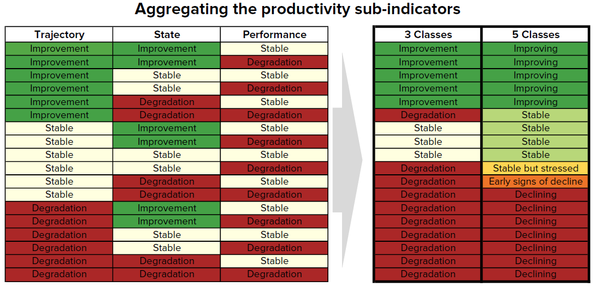

Land Degradation#
Contents
Land Degradation Indicators#
Land degradation, as defined by the United Nations Convention to Combat Desertification (UNCCD), is a complex process that refers to the long-lasting reduction or loss of biological and economic productivity of lands, caused by human activities, sometimes exacerbated by natural phenomena. Terrestrial vegetation including crops depend on appropriate soil which is the substrate on which vegetation/crops grow, besides other climatic factor requirements.
Different land masses are however affected by different factors at different levels. The factors pan from the climatic to soil properties, from land use land cover and to surface roughness which depends on the conditions that a given land mass is exposed to. Apart from the natural and geophysical causes, land degradation may also be influenced by anthropogenic factors which yield conditions for land degradation to take place, these activities may span from uncouth agricultural practices, desertification through illegal logging, top soil harvesting, mining activities among others.
The OSS.LDMS focuses on provision of evidence-based proofs on land degradation and its spatiotemporal distribution and therefore the hotspots where priority actions should be taken or awareness-raising campaigns should be planed. The figure below show key land degradation indicators included in the OSS.LDMS service

Summary of included services on the OSS.LDMS service platform#
SDG15.3.1 Indicator#
As part of the Sustainable development Goals(SDGs), SDG 15 is to: “Protect, restore and promote sustainable use of terrestrial ecosystems, sustainably manage forest, combat desertification, and halt and reverse land degradation and halt biodiversity loss”
Target 15.3 aims to: “By 2030, combat desertification, restore degraded land and soil, including land affected by desertification, drought, floods, and strive to achieve land degradation-neutral world”
The indicator used to assess the progress of each SDG target is the 15.3.1 indicator: “Proportion of land that is degraded over total land area’’
The basic land degradation indicators include three main sub-indicators of the SDG target 15.3.1 (proportion of land that is degraded over the total land area). As the custodian agency of SDG 15.3, the United Nations Convention to Combat Desertification (UNCCD) has developed recommendations/Good practice guide on how to compute SDG indicator 15.3.1 from 3 sub-indicators:
Vegetation productivity
Landcover
Soil Organic carbon
{kind=link}
SDG 15.3.1 Sub-indicators#
Productivity#
Land productivity is the biological productive capacity of the land (i.e. the ability to produce food, fibre and fuel that sustain life). For easy interpretation the annual mean vegetation indices values at the pixel level will be used to assess three measures of change (trajectory, state and performance) as summarized in the figure below and explained in the subsequent sub-sections:

Sammury methodology for conputing Land Productivity#
Trajectory#
The rate of change in primary productivity over time which will be computed using linear regression at the pixel level for various Landsat derived vegetation indices (NDVI, MSAVI2, SAVI). To identify areas experiencing changes in the primary productivity, a non-parametric significance test will be performed to show the significant changes (p-value of 0.05). Positive significant trends in the vegetation indices will indicate potential improvement while a negative significant trend will indicate potential degradation.
The annual integrals of the vegetation indices are interpreted alongside historical precipitation data as a context. The climatic correction method that will be applied is the Rain Use Efficiency (RUE). The rain use efficiency is the ratio of annual NPP to annual precipitation. After the RUE is computed, linear regression and nonparametric significance testing will be applied to the RUE over time. Positive significance in RUE indicates improvement while negative significance will indicate potential degradation.
State#
The Productivity State indicator will be used to show recent changes in primary productivity compared to a baseline period. The indicator is computed from (NDVI, MSAVI2, SAVI) derived from medium resolution Landsat imagery following the steps outlined below:
A baseline period (historical period for comparison to recent primary productivity) will be defined. (This will be left open for selection of different periods by the users).
A comparison period (recent years for which the state is being analysed) will be defined. (The definition of this period will also be left open for the users of the service)
The annual integrals of the selected vegetation index for the baseline period will be used to compute a frequency distribution at the selected pixel. That frequency distribution curve will then be used to classify the values to the 10th percentile(1 to 10).
The next step would involve computing the mean of the selected vegetation index for the baseline period, and to determine the percentile class it belongs to. The computed mean value for the baseline period is then assigned a number which corresponds to that percentile class if falls between 1 and 10.
The mean value of the selected index for the comparison period is the computed and percentile class to which it belongs to. It is determined and placed in a class corresponding to its percentile class.
The difference between the assigned class number for the comparison and the baseline period (comparison minus baseline) will be computed and thresholded to show the productivity state of the land.
Perfomance#
The Productivity Performance indicator will measure the local productivity relative to other similar vegetation types in similar ecological units. A combination of soil units (based on Soil Grids data at 250m resolution) and land cover (ESA CCI at 300m resolution) will be used to define the ecological units. The indicator will be computed as follows:
The analysis period is defined, and time series data is used to compute mean value for the selected vegetation index at pixel level.
Similar ecological units are derived as the unique intersections of different land cover types and soil types.
For each ecological unit, the frequency distribution of the mean pixel values obtained in step 1 shall be computed. From the distribution the value representing the 90th percentile will be considered the maximum productivity for that unit.
The ratio of mean NDVI and maximum productivity (in each case compare the mean observed value to the maximum for its corresponding unit) is computed. If the computed ratio is less than 50 %, the pixel shall be considered potentially degraded for this indicator.
Sammury methodology for conputing Land Productivity#
Landcover#
Monitoring of Land Use and Land Cover Changes (LULCCs) at both regional and local scales presents a major opportunity for identifying areas threatened by land degradation where mitigation measures should be taken. Traditionally, LULCCs have been interpreted by distinguishing between two transformation types: conversion and modification.
To assess changes in land cover users need land cover maps covering the study area for the baseline and target years. These maps need to be of acceptable accuracy and created in such a way which allows for valid comparisons. LDMS uses ESA CCI land cover maps as the default dataset, but local maps can also be used. The indicator is computed as follows:
Reclassify both land cover maps to the 7 land cover classes needed for reporting to the UNCCD (forest, grassland, cropland, wetland, artificial area, bare land and water).
Perform a land cover transition analysis to identify which pixels remained in the same land cover class, and which ones changed.
Based on your local knowledge of the conditions in the study area and the land degradation processed occurring there, use the table below to identify which transitions correspond to degradation (- sign), improvement (+ sign), or no change in terms of land condition (zero).

LDMS will combine the information from the land cover maps and the table of degradation typologies by land cover transition to compute the land cover sub-indicator.

Sammary methodology for computing land cover change#
Carbon-stocks#
The third sub-indicator for monitoring land degradation as part of the SDG process quantifies changes in soil organic carbon (SOC) over the reporting period. Changes in SOC are particularly difficult to assess for several reasons, some of them being the high spatial variability of soil properties, the time and cost intensiveness of conducting representative soil surveys and the lack of time series data on SOC for most regions of the world. To address some of the limitations, a combined land cover/SOC method is used in LDMS to estimate changes in SOC and identify potentially degraded areas. The indicator is computed as follows:
Determine the SOC reference values. LDMS uses SoilGrids 250m carbon stocks for the first 30 cm of the soil profile as the reference values for calculation (NOTE: SoilGrids uses information from a variety of data sources and ranging from many years to produce this product, therefore assigning a date for calculations purposes could cause inaccuracies in the stock change calculations).
Reclassify the land cover maps to the 7 land cover classes needed for reporting to the UNCCD (forest, grassland, cropland, wetland, artificial area, bare land and water). Ideally annual land cover maps are preferred, but at least land cover maps for the starting and end years are needed.
To estimate the changes in C stocks for the reporting period C conversion coefficients for changes in land use, management and inputs are recommended by the IPCC and the UNCCD. However, spatially explicit information on management and C inputs is not available for most regions. As such, only land use conversion coefficient can be applied for estimating changes in C stocks (using land cover as a proxy for land use). The coefficients used were the result of a literature review performed by the UNCCD and are presented in the table below. Those coefficients represent the proportional in C stocks after 20 years of land cover change.

Changes in SOC are better studied for land cover transitions involving agriculture, and for that reason there is a different set of coefficients for each of the main global climatic regions: Temperate Dry (f = 0.80), Temperate Moist (f = 0.69), Tropical Dry (f = 0.58), Tropical Moist (f = 0.48), and Tropical Montane (f = 0.64).
Compute relative different in SOC between the baseline and the target period, areas which experienced a loss in SOC of 10% of more during the reporting period will be considered potentially degraded, and areas experiencing a gain of 10% or more as potentially improved.

Combining Productivity Indicators#
The three productivity sub-indicators are then combined as indicated in the tables below. For SDG 15.3.1 reporting, the 3-class indicator is required, but LDMS also produces a 5-class one which takes advantage of the information provided by State to inform the type of degradation occurring in the area.
Vegetation Loss/Gain hotspots#
Land degradation hotsports (LDH) are produced via the analysis of time-series vegetation indices data and are used to characterize areas of different sizes, where the vegetation cover and the soil types are severely degraded.
Vegetation loss/gain hotspots will be calculated based on time series observation of selected suit of vegetation indices depending on the climatic zones and terrain morphology of the North African countries. The selected indices derived from Landsat data are as listed below:
-NDVI for humid zones, sub-humid and semi-arid zones -MSAVI2 for arid and stepic zones -SAVI for desert areas
Forest Change#
Forest Gain/Loss#
The quantification of the forest gain/loss hotspots will be based on pre-existing high-resolution global maps derived from Hansen Global Forest change dataset that can be accessed using Google Earth Engine API.
The maps are produced from time-series analysis of Landsat images characterizing forest extent and change over time.
Forest Fires#
Burnt areas and forest fires will be highlighted and mapped out form remotely sensed Landsat/Sentinel data using the Normalized Burn Ratio (NBR). NBR is designed to highlight burned areas and estimate burn severity. It uses near-infrared (NIR) and shortwave-infrared (SWIR) wavelengths. Before fire events, healthy vegetation has very high NIR reflectance and a low SWIR reflectance. In contrast, recently burned areas show low reflectance in the NIR and high reflectance in the SWIR band.
The NBR will be calculated for Landsat/Sentinel images before the fire (pre-fire NBR) and after the fire (post-fire NBR). The difference between the pre-fire NBR and the post-fire NBR referred to as delta NBR (dNBR) is computed to highlight the areas of forest disturbance by fire event.
Classification of the dNBR will be used for burn severity assessment, as areas with higher dNBR values indicate more severe damage whereas areas with negative dNBR values might show increased vegetation productivity. dNBR will be classified according to burn severity ranges proposed by the United States Geological Survey(USGS)

Sammury methodology for conputing Burnt Areas#